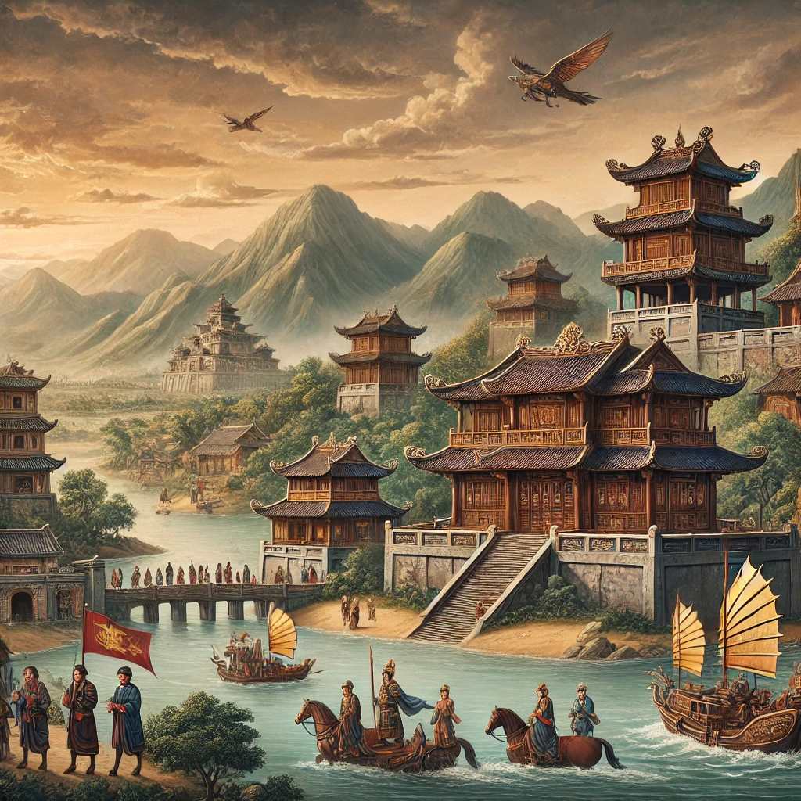
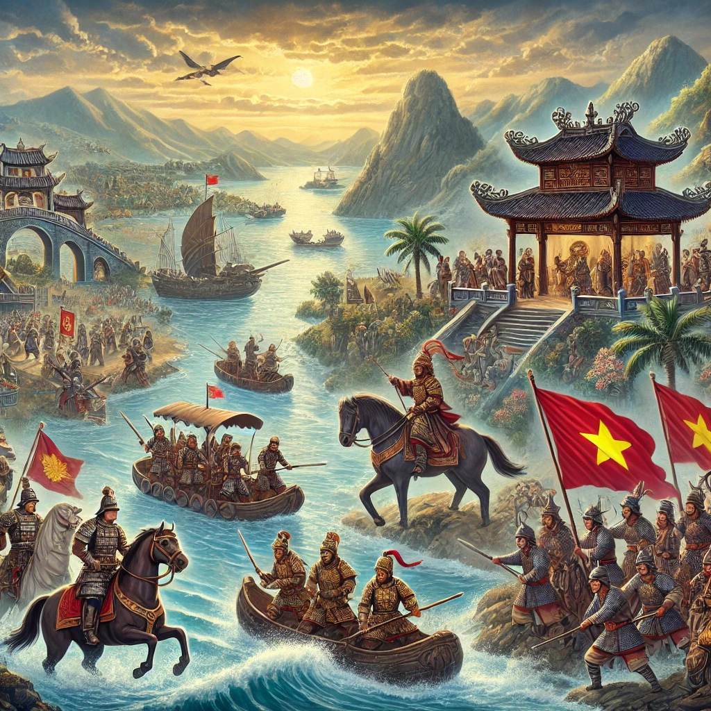
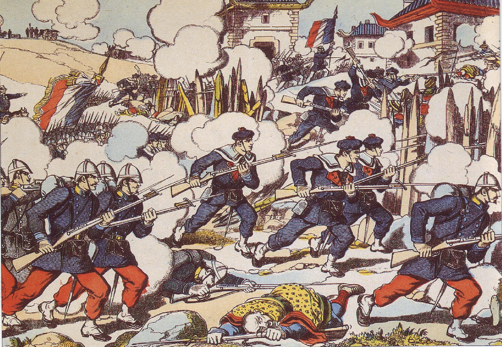

L'histoire du Vietnam est riche et marquée par des périodes de domination étrangère, de
luttespour l'indépendance et de transformations profondes.
Voici un aperçu des grandes étapes de cette histoire :
1. L'Antiquité et la formation du Vietnam

-Vers 2879 av. J.-C., la légende du royaume de Văn Lang, dirigé par les rois Hùng, marque le
début de l'histoire vietnamienne.
-Au IIIe siècle av. J.-C., le royaume d'Âu Lạc est fondé par An Dương Vương.
-En 111 av. J.-C., le Vietnam tombe sous la domination de la Chine (dynastie Han), une occupation qui durera
plus de 1000 ans.
2. La lutte pour l'indépendance et la naissance du Đại Việt (939-1802)

-En 938, Ngô Quyền remporte la bataille de la rivière Bạch Đằng et met fin à la domination
chinoise, marquant le début de l'indépendance vietnamienne.
-Les dynasties Đinh (968-980), Lê antérieure (980-1009), puis Ly (1010-1225) consolident le pouvoir vietnamien
sous le nom de Đại Việt.
-La dynastie Trần (1225-1400) repousse trois invasions mongoles menées par Kubilai Khan.
-En 1407, la Chine reprend brièvement le contrôle, mais Lê Lợi mène une révolte victorieuse et fonde la dynastie
Lê (1428-1788).
Au XVIIe siècle, le pays est divisé entre les Trịnh au nord et les Nguyễn au sud.
3. L'époque coloniale et la domination française (1858-1954)

-En 1858, la France envahit le Vietnam et en fait une colonie en 1887, intégrée à l'Indochine
française.
-Au début du XXe siècle, des mouvements nationalistes émergent, dont celui dirigé par Hồ Chí Minh.
-La Seconde Guerre mondiale affaiblit la présence française, et le Việt Minh, dirigé par Hồ Chí Minh, proclame
l'indépendance en 1945.
-La guerre d'Indochine (1946-1954) se conclut par la victoire vietnamienne à Điện Biên Phủ et la signature des
accords de Genève en 1954, divisant le Vietnam en deux (Nord communiste, Sud soutenu par les États-Unis).
4. La guerre du Vietnam (1955-1975) et la réunification
-Entre 1955 et 1975, le Nord (dirigé par Hồ Chí Minh et soutenu par l'URSS et la Chine)
combat le Sud (soutenu par les États-Unis) dans la guerre du Vietnam.
-Après la chute de Saïgon en 1975, le Vietnam est réunifié sous un régime communiste en 1976.
5. L'ère moderne et le développement économique
-Après des décennies d'isolement, le Vietnam amorce une politique de réformes économiques
(Đổi Mới) en 1986, ouvrant le pays à l'économie de marché.
-Aujourd'hui, le Vietnam est l'un des pays à la croissance la plus rapide d'Asie, tout en restant dirigé par le
Parti communiste.